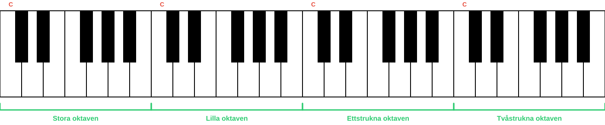
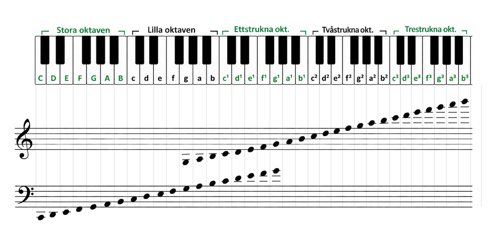

Du har redan stött på oktaver i kursen - du har övat på noter i den ettstrukna oktaven, och i förra delen såg vi även lilla oktaven i F-klav.
Nu ska vi gå igenom de olika oktaverna och varför de har namn.
Repetition: Vad är en oktav?
Kommer du ihåg från Del 1? Tonernas namn börjar om efter B - nästa ton blir C igen. Avståndet från en ton till nästa ton med samma namn kallas en oktav.
C – D – E – F – G – A – B – C
en oktav
Ett piano har flera C, flera D, flera E och så vidare. Två C har samma tonnamn, men ligger olika högt och låter därför olika.
Om någon säger "spela ett C" - vilket C menar de? Det finns ju flera!
Därför delar man in tonerna i olika oktaver, och varje oktav har ett eget namn. På så sätt kan man skilja på till exempel ett ljust C och ett mörkt C.
Oktaverna på pianot
Varje oktav sträcker sig från ett C till nästa C. Här är de vanligaste oktaverna:

- Stora oktaven
- Lilla oktaven
- Ettstrukna oktaven - den vi började med i Del 2
- Tvåstrukna oktaven
Det finns fler oktaver utanför dessa, men de här fyra är de vanligaste att börja med.
Hur skriver man tonerna?
För att visa vilken oktav en ton tillhör skriver man tonnamnet på olika sätt:

- Stora oktaven - stora bokstäver (C, D, E...)
- Lilla oktaven - små bokstäver (c, d, e...)
- Ettstrukna oktaven - små bokstäver med en etta (c¹, d¹, e¹...)
- Tvåstrukna oktaven - små bokstäver med en tvåa (c², d², e²...)
- Trestrukna oktaven - små bokstäver med en trea (c³, d³, e³...)
Fråga: Om du spelar ett D i lilla oktaven, och sedan spelar samma ton men en oktav högre - i vilken oktav hamnar du då?
Visa svar
Svar: Ettstrukna oktaven. Ett D en oktav högre har fortfarande tonnamnet D, men ligger i nästa oktav - den ettstrukna oktaven.
Bra jobbat!
Nu vet du vad en oktav är, varför oktaverna har namn och hur man skriver tonerna i olika oktaver. Kom ihåg att öva, öva, öva!
Redo att öva?